安装和打开Unreal Engine 5; 创建一个名为LearnBP的项目√

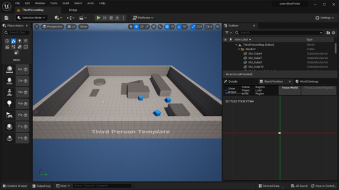
Play一下√
安装和打开Unreal Engine 5; 创建一个名为LearnBP的项目√
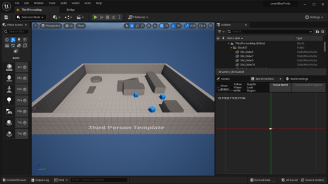
Play一下√
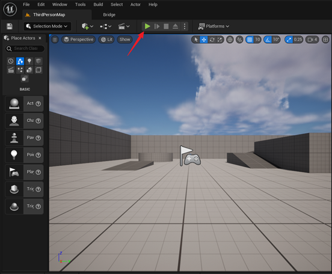
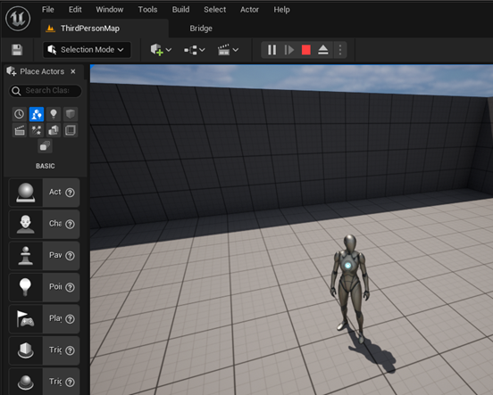
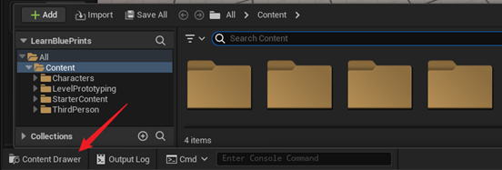

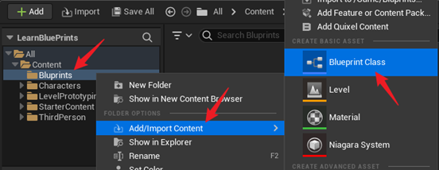
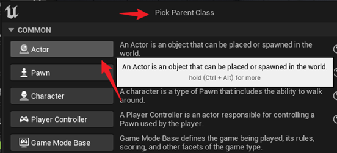
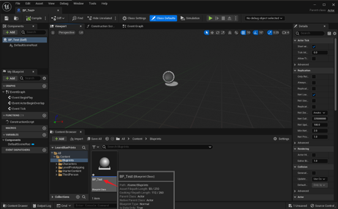
在文件夹中双击 BP_Test 打开这个蓝图进行编辑√
把 BP_Test 标签页(tab)拖到ThirdPersonMap旁边√
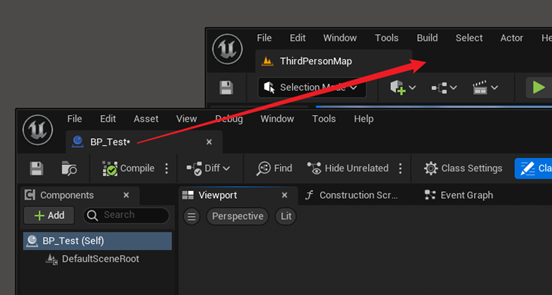
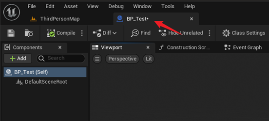
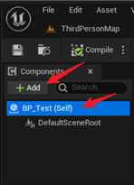 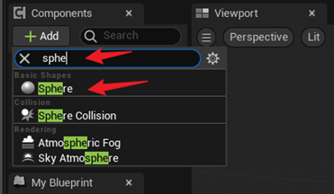
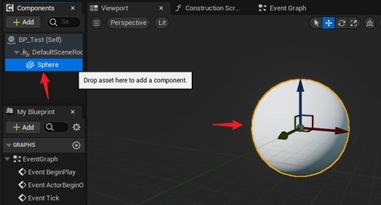
特别注意, 哪个组件高亮, 则点击Add的时候, 就会在这个组件的下面添加子组件√
compile, save√
切换到ThirdPersonMap; 把BP拖到ThirdPersonMap中√
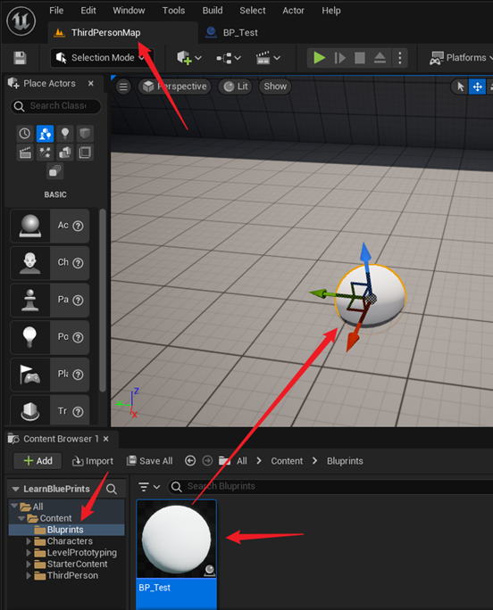
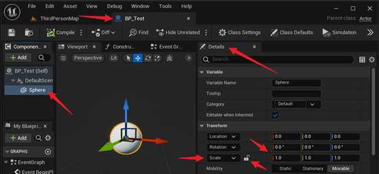
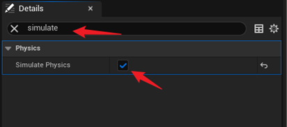
save; compile√
回到地图, Play, 这时的球应该可以踢了√

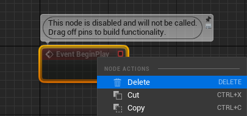
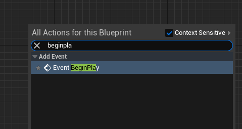
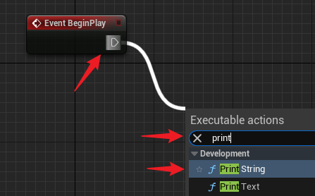
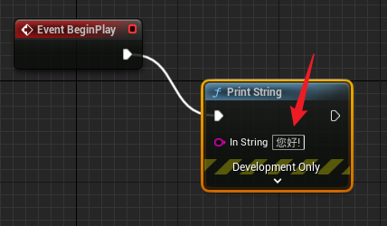
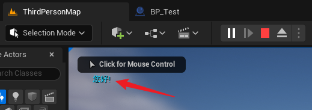
如果我们在地图中放置多个BP_Test, 会多次打印 您好!
如果我们在Map中添加了很多球, 可以在Map的Outliner中找到添加的BP_Test, 按delete键删除它们√
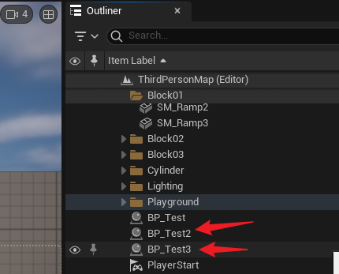
如果想知道Sphere究竟有多大, 可以使用get world scale方法.
注意, 这个 Event Graph 是属于 BP_Test 的. Get World Scale是从Sphere引出的, 因此它的意思是获得 Sphere 在 World 中的 Scale
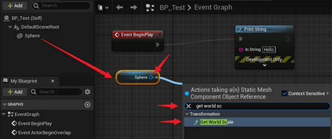
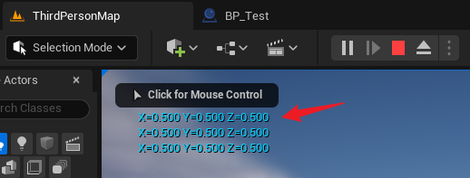
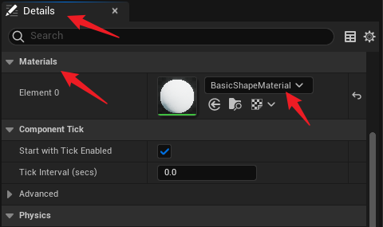
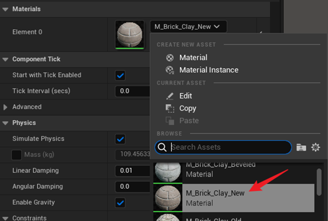
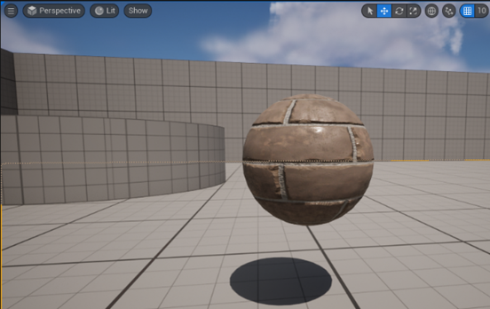
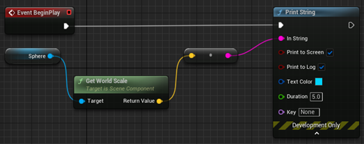
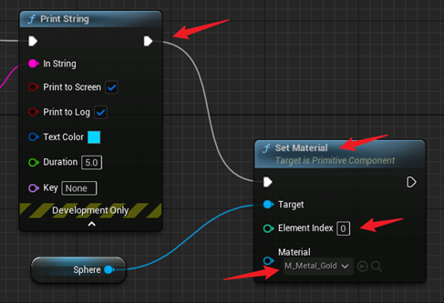
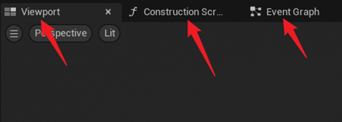
框选Blueprint代码; ctrlc复制; 然后把复制的内容粘贴(ctrlv)到Construction Script的画布上√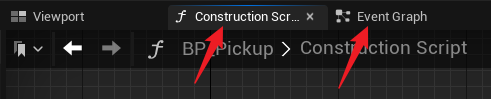
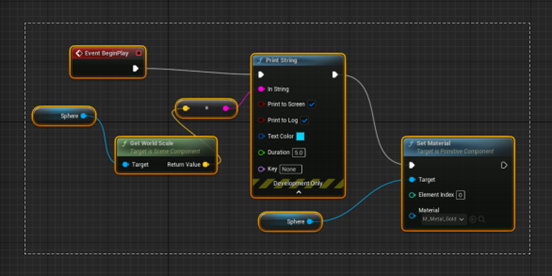
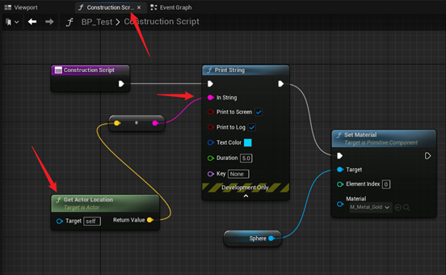
观察: 不用开始游戏, 在编辑器中球就变成金黄色的了。但是看不到Location的三维坐标的显示.
打开Output Log, 拖动Sphere的时候, 可以观察到其坐标的改变√
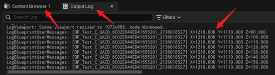
Construction Script的作用是, 可以预修改Asset的一些属性, 而不是在游戏开始后修改。一个用途是: 让金色的球在空间随机分布; 或者让草木在庭院中随机分布。
Tick事件每帧都会执行. 计算机每秒钟一般能运行30到300帧, 这就是帧率(FPS, Frame Per Second)。执行Tick事件需要时间, 因此为了保证游戏的流畅度, 最好只是在必要的时候才使用Tick。
查看游戏的FPS(Frame Per Second)√
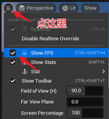
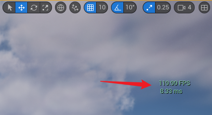
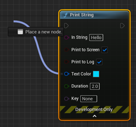
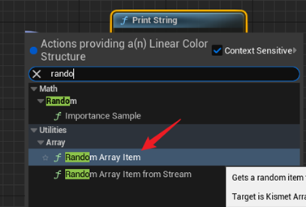
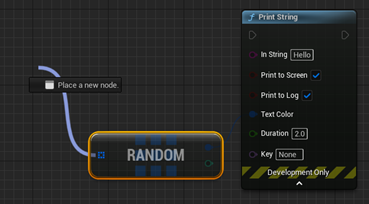
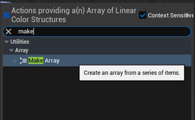
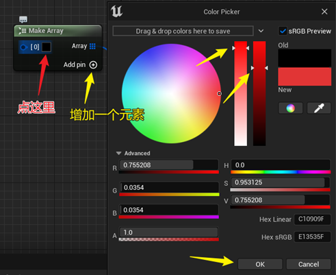
点击 Pin, 再增加两个元素; 并设置好颜色和饱和度√
连上 Event Tick。Compile, Save。Play√
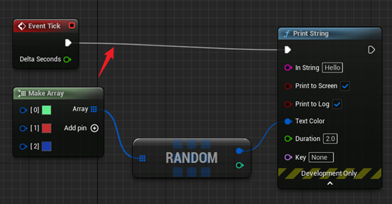
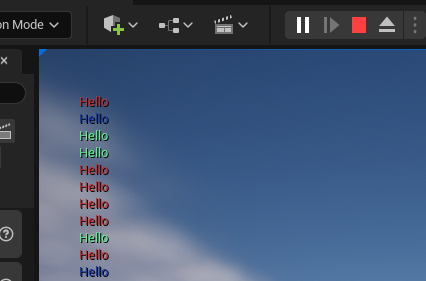
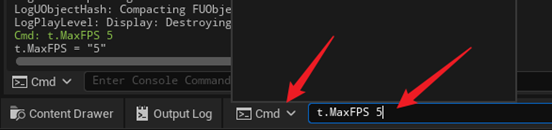
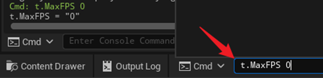
(uebp01--第一部分结束)